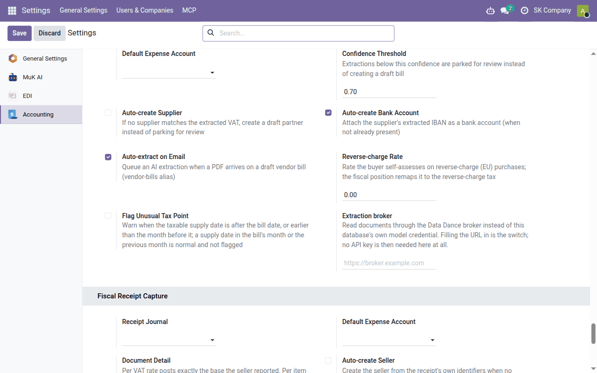

Task guide
Document capture
Vendor bills filled in from their PDF by AI, and till receipts read from their QR code through eKasa or from a photo — what fills in by itself, what to check and how it becomes an accounting document.
| Country | Czech Republic and Slovakia |
|---|---|
| Edition | Odoo Community |
| Covers | account_invoice_ai_extract (delivered separately), account_invoice_ai_extract_broker_client (delivered separately), l10n_cssk_receipt_capture, l10n_sk_ekasa_receipt, l10n_cssk_receipt_capture_ai (delivered separately), l10n_cssk_receipt_capture_expense |
AI reading — of vendor bills and of receipt photos — is available only on the paid Data Dance hosting service or as a module for purchase. Capturing Slovak receipts through eKasa (the QR code) is part of the free modules.
What this guide is for
Odoo can transcribe vendor documents by itself:
| Document | How it is read | Who switches it on |
|---|---|---|
| A vendor bill or credit note as PDF | a language model reads the PDF; Odoo fills in a draft bill from the reading | hosting service: our team; otherwise the purchased module |
| A Slovak till receipt with a QR code | the QR code is verified in the Financial Administration's eKasa system, which returns the receipt with its items | you — free modules from Apps |
| A receipt with no readable QR code, a Czech receipt | a language model reads the photo | hosting service: our team; otherwise the purchased module |
The division of work is the same in every case: the model or eKasa only reads, Odoo decides (the supplier, the taxes, the totals and duplicate checks) and you post — the result is always a draft.
When AI reads a document, the whole file leaves the database and is sent to the Data Dance extraction service (on the hosting service), or to the language model provider you set up yourself in MuK AI with your own API key when you bought the module. Nothing else from the database (partners, accounts, other documents) is sent.
Vendor bills
Only on the paid hosting service or with the purchased module.
Setup
On the hosting service our team switches reading on; with the purchased module, enter your model provider's API key in MuK AI → Configuration → Providers. Then check Accounting → Configuration → Settings, block AI Invoice Extraction:
| Setting | What to set |
|---|---|
| Purchase Journal | the journal for bills the reading creates |
| Default Expense Account | the lines' account; empty = the supplier's usual account, then the journal's (see Setting up account assignment) |
| Confidence Threshold | readings the model itself rates lower (0.7 by default) are set aside for review |
| Auto-create Supplier | off: an unknown supplier is set aside for review; on: it is created |
| Auto-create Bank Account | adds the IBAN printed on the bill to the supplier — switch it off if you verify suppliers' bank accounts first |
| Auto-extract on Email | a bill arriving by email is read by itself |

Which purchase tax a printed rate maps to is set in Accounting → Configuration → AI Invoice VAT Mapping — filled in for 23, 19 and 5 % at installation; check it.
How a bill arrives
- By email: give the purchase journal an email alias (the journal's Advanced Settings tab) and hand it to your suppliers. Each PDF in an email becomes a draft bill and is read.
- By hand: create a draft vendor bill, attach the PDF and click Extract with AI.
Reading runs in the background (usually within five minutes).
The result
All readings are in Accounting → Vendors → AI Invoice Extractions; the AI Extraction button on a bill leads to its reading:
| State | Meaning |
|---|---|
| Resolved | the draft bill is filled in |
| Needs Review | the totals do not agree, the confidence is below the threshold or the supplier was not found; the reason is stated |
| Duplicate | a bill of the same supplier with the same number already exists |
| Error | the reason is stated; after fixing it, Re-run |
Filled in: the supplier (by IČ DPH, IČO, name including the legal form, or IBAN), the bill number as reference, the dates including the supply date, the variable, constant and specific symbols, the lines (or one line per VAT rate when the detail cannot be reconciled), the taxes by the rate mapping and the supplier's fiscal position, and the VAT per rate exactly as in the bill's VAT summary.
Check before posting
- the supplier — especially when the bill's history says it was found by name or IBAN, or created;
- the supplier's new bank accounts and the payee account;
- the supply date — it decides the period of the VAT deduction;
- the expense account and tax of each line, and reverse charge where it belongs;
- every ⚠ note in the history, and the total against the amount due.
Then post the bill as any other (Daily bookkeeping).
Till receipts
Capture through eKasa concerns Slovak receipts; Czech receipts carry no verification code and are read by AI only (below).
Setup
- From Apps install Slovak eKasa Receipt Capture (the shared Fiscal Receipt Capture framework comes with it). If employees hand in receipts as expenses, also Fiscal Receipt Capture — Employee Expenses.
- Accounting → Configuration → Settings, block Fiscal Receipt Capture: Receipt Journal (the purchase journal for receipts) and Default Expense Account (without it no document is created from a receipt).
- Block Slovak eKasa Receipt Lookup: switch on Enable eKasa Lookup. eKasa answers only from an IP address notified to the Financial Directorate (§ 18(11) of the act on recording sales): once notified, tick IP Address Notified and record the address and date. On the Data Dance hosted service it is our server's address — our team arranges the notification with you. The service allows about 60 lookups an hour from one address (Hourly Lookup Budget).
Capturing a receipt
Accounting → Vendors → Fiscal Receipts:
- Scan Receipt opens the camera — scan the QR code right above the text OVERTE DOKLAD POMOCOU QR KÓDU (not a loyalty app's code);
- or in Captured Receipts → New attach a photo (Source image) and click Capture.
eKasa returns the receipt as the till recorded it: the seller with DIČ, IČ DPH and IČO, the date, the total, every item and the VAT summary. The receipt is then Captured; if a check fails (totals, rates, duplicate) it is Needs Review with the reason, and listed in To Review.
The seller is looked up by IČ DPH, IČO and DIČ, never by name; a new one is created with Create Seller.
The accounting document
Create Vendor Receipt creates a draft purchase receipt with one line per VAT rate on the default expense account, with the photo. Check it and post it.
A simplified invoice supports the VAT deduction only up to €400 including VAT (§ 74(3)(b) of the VAT Act). Above that the receipt says so and the VAT is posted as part of the cost; if you hold a full invoice for the purchase, tick Full invoice held.
A receipt an employee paid with their own money belongs in expenses: Create Expenses creates an expense for the employee, or employees upload receipts themselves in Expenses → My Expenses (Scan Receipt, My Receipts).
A receipt without a QR code
Only on the paid hosting service or with the purchased module.
If the QR code cannot be read from the photo, or the receipt is Czech (which has no verification code), a language model reads the photo. On a Slovak receipt the model also reads the identifiers printed by the code and Odoo verifies them in eKasa; if eKasa finds the receipt and the total agrees, its data replaces the reading. A captured receipt has an AI Reading tab with the model's confidence and notes.